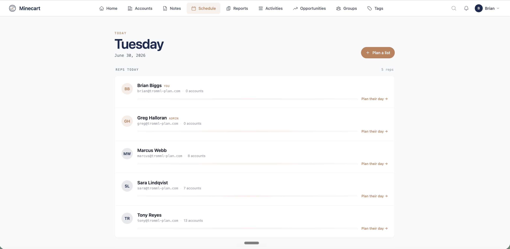
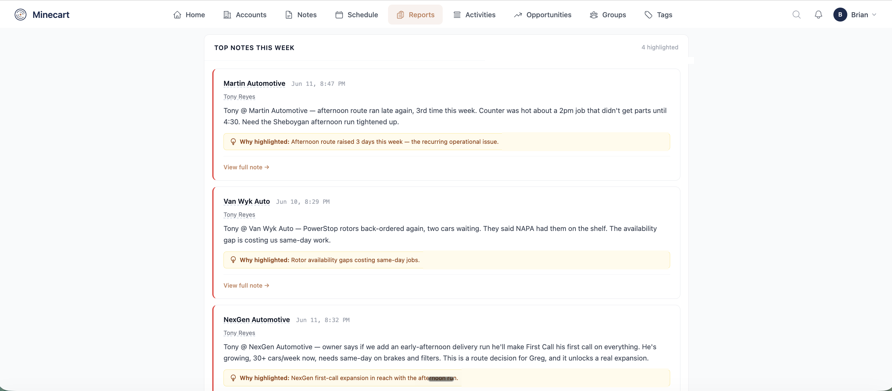
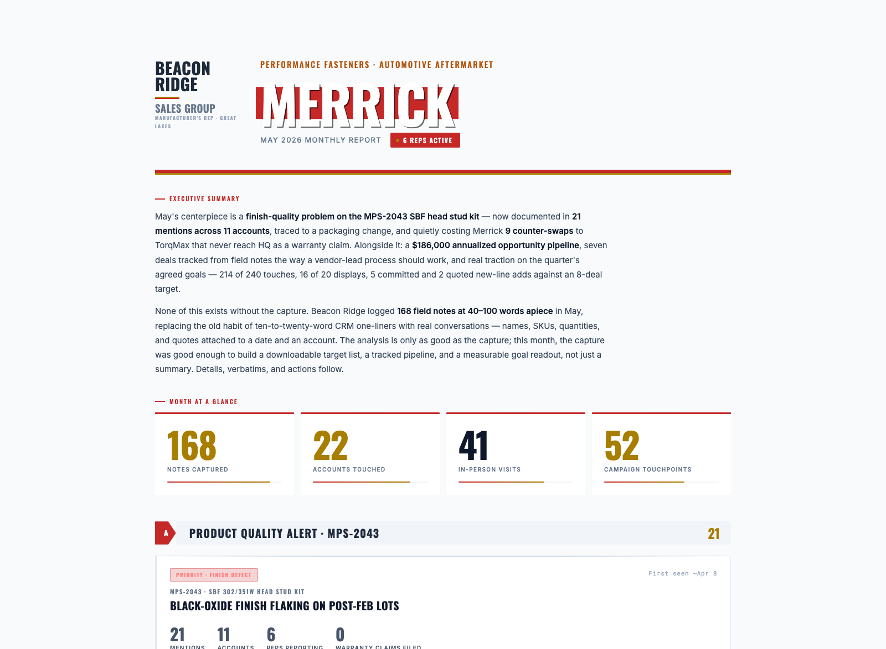

Executive briefing · Prepared for the Auto Care Association
Your team is with members constantly: conferences, committee calls, board calls, webinars. What members say in those moments is the most valuable data ACA has, and today it lives in people's heads. Your AMS and HubSpot are systems of record. Minecart is the system of action that sits on top, turning member conversations into a record every staffer can act on, without adding a data-entry job to anyone's day.
★ Winner · 2025 MEMA Innovation Award
Almost none of it gets captured. A staffer has a hallway conversation at a conference, a great call with a member about the brand table, a committee call where six people weigh in on a spec. Then it's gone, or it lives in one person's memory until they leave.
Your AMS holds records. Your team is bringing HubSpot in for email marketing. Neither one is built to catch what gets said out loud. That's not a knock on either system, it's just not the job they were built for. Minecart is built for exactly that job, and it hands the clean result back to whatever systems you trust to hold it, including a future data lake. It supports where you're headed, it doesn't compete with it.
Better member engagement
Right now the loudest signal comes from your most engaged members, the top of the pyramid. Minecart captures the hallway conversation and the quiet member too, so every real interaction becomes part of that member's record, not just the ones who show up to committee calls.
A feedback loop on products and campaigns
Jonathan's team builds the brand table, part terminology, and segmentation data. Right now there's no reliable way to know what members actually use or ask for. Minecart closes that loop, and marketing gets the same benefit: personalize by segment, light-duty versus heavy-duty, based on what members said, not a guess.
At-risk members surface early
The member who canceled last year, went quiet, or stopped logging in shows up in a briefing before the non-renewal notice, with the context of the last real conversation your team had with them.
Jacki Lutz · Auto Care Association
1 Before the show
We load the attendee list against the member database. Minecart builds account groups automatically: lapsed heavy-duty members attending, members who never activated a data subscription, first-time attendees. Every staffer walks in with a planned list of who to meet and why, instead of working the floor cold.

The team's plan builds itself. Who to meet, and why, before anyone sets foot on the floor.
2 During the show
Your staffer walks into every conversation already briefed: membership status, products the member uses, last interactions, open follow-ups. No digging through notes at the booth.

Walk in briefed. Status, products, last conversation.

One button, thirty seconds. No forms, no typing at the booth.
After each conversation, press the button and talk for thirty seconds. That's it.
3 After the show
Every note lands on the right member account. Follow-ups get pulled out and given an owner. Briefings are already updated for the next conversation, and the next show. Personal details from the conversation can flow to HubSpot too, so the follow-up email actually references what the member said, not a generic template.
A committee call wraps. Six members weighed in. Someone on Jonathan's team talks into their phone for two minutes: what each member said, who pushed back on a spec, who asked for a feature, what needs following up.
Minecart splits that one voice note across all six member accounts. Each piece attaches to the right record, and the follow-ups come out with an owner attached. Nothing gets lost because one person didn't have time to write it up.
Over time, this becomes Jonathan's rollup: mentions of a given product across every committee and conversation accumulate in one place. "Should we build it" gets answered with what members actually said, not a hunch.

Themes roll up automatically. Whoever owns a product sees what members are actually saying about it.
The same engine builds stakeholder-ready reports on its own. Our rep agency customers already use this monthly to report to their partners. For ACA it could mean a report per committee, per product line, or per member segment, built from what actually happened, not assembled by hand.

Beacon Ridge and Merrick Fastener Group are fictional, built to show the report format. The workflow is the one running today.
This is the natural-language-questions-over-trusted-data experience you described wanting on every source. With Minecart, it runs on data your own team captured.
Which heavy-duty members did we talk to this fall who mentioned the brand table but don't subscribe yet?
3 members match:
Estimated pilot price: $6,000, plus two Fall Leadership Days passes.
Standard pricing is $500 per month for the platform plus $100 per user per month. Partner discounts are available for the Auto Care Association.
Fifteen minutes to set up. You see what's in your own data, and you decide whether it goes further.
Get a free Signal AnalysisWe're named after the trommel, the mining equipment that separates the dirt from the gold. That's the whole job: pull the signal out of what your team is already saying and hearing, and get it to the person who can act on it. Honestly, let's not boil the ocean here. Minecart is basically a big red button a staffer talks into. CRMs and AMS platforms track what happened. Minecart turns what was said into what happens next.
Trusted by


Built for the aftermarket, by people who know it